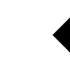
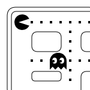
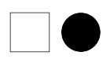

Примитивные фигуры создаются контурами. Контур - это набор точек, которые, соединяясь в отрезки линий, могут образовывать различные фигуры, изогнутые или нет, разной ширины и разного цвета. Контур (или субконтур) может быть закрытым.
Пример использования canvas для оформления фона вашего сайта
Создание фигур используя контуры происходит в несколько важных шагов:
Здесь приведены функции, которые можно использовать в описанных шагах:
beginPath() - cоздает новый контур. После создания используется в дальнейшем командами рисования при построении контуров.Path методы - для установки различных контуров объекта.closePath() - закрывает контур, так что будущие команды рисования вновь направлены контекст.stroke() - рисует фигуру с внешней обводкой.fill() - рисует фигуру с заливкой внутренней области.Первый шаг создания контура заключается в вызове функции beginPath(). Внутри содержатся контуры в виде набора суб-контуров (линии, дуги и др.), которые вместе образуют форму фигуры. Каждый вызов этого метода очищает набор, и мы можем начинать рисовать новые фигуры.
Если текущий контур пуст (например, как после вызова beginPath() или на вновь созданном canvas), первой командой построения контура всегда является функция moveTo(). Поэтому мы всегда можем установить начальную позицию рисования контура после перезагрузки.
Вторым шагом является вызов методов, определяемых видом контура, который нужно нарисовать. Их мы рассмотрим позднее.
Третий и необязательный шаг - это вызов closePath(). Этот метод пытается закрыть фигуру, рисуя прямую линию из текущей точки в начальную. Если фигура была уже закрыта или является просто точкой, то функция ничего не делает.
Когда вы вызываете fill(), то каждая открытая фигура закрывается автоматически, так что вы можете не использовать closePath(). Это обстоятельство не имеет место в случае вызова stroke().
Например, код для рисования треугольника будет выглядеть как-то так:
function draw() {
var canvas = document.getElementById('canvas');
if (canvas.getContext){
var ctx = canvas.getContext('2d');
ctx.beginPath();
ctx.moveTo(75,50);
ctx.lineTo(100,75);
ctx.lineTo(100,25);
ctx.fill();
}
}
Результат выглядит так:
Теперь давайте разберемся подробнее как это работает.
Одна очень полезная функция, которая ничего не рисует, но связана по смыслу с вышеописанными функциями - это moveTo(). Вы можете представить это как отрыв (подъем) пера от бумаги и его перемещение в другое место.
moveTo(x, y) - перемещает перо в точку с координатами x и y.
При инициализации canvas или при вызове beginPath(), вы захотите использовать функцию moveTo() для перемещения в точку начала рисования. Можно использовать moveTo() и для рисования несвязанного(незакрытого) контура.
Важность путей также состоит в том, что они позволяют заполнять цветом фигуры. Например, нарисуем красными линиями треугольник посредством следующего кода:
context.moveTo(250,50);
context.lineTo(50,250);
context.lineTo(450,250);
context.lineTo(250,50);
context.lineWidth = 10;
context.strokeStyle = "red";
context.stroke();
Теперь мы хотим закрасить внутреннюю область этого треугольника, но метод stroke() для этой задачи не подходит. Здесь нужно закрыть текущий путь с помощью метода closePath(), выбрать цвет заливки, установив значение свойства fillStyle, а потом вызвать метод fill(), чтобы собственно выполнить заливку.
В этом примере стоит сделать пару доводок. Первое: при закрытии пути нет надобности рисовать последний сегмент линии, т.к. вызов метода closePath() автоматически строит линию между последней нарисованной точкой и начальной точкой. Второе: лучше сначала выполнить заливку фигуры и только потом очертить ее контуры. В противном случае линии контура могут быть частично перекрыты заливкой.
Далее приведен полный код для рисования и заливки треугольника:
context.moveTo(150,60);
context.lineTo(50,140);
context.lineTo(250,140);
context.closePath();
// Заливка
context.fillStyle = "#E31B6D";
context.fill();
// Контур
context.lineWidth = 10;
context.strokeStyle = "#404040";
context.stroke();
Обратите внимание, что в этом примере метод beginPath() вызывать не нужно, путь создается автоматически. Метод beginPath() следует вызывать, только когда надо начать новый путь, например при изменении параметров линии или новой фигуры. Результаты выполнения кода показаны ниже:
Вершины фигур, создаваемые соединяющимися линиями, можно оформить тремя разными способами, присваивая свойству контекста lineJoin соответствующие значения. Значение round округляет вершины, значение mitre соединяет линии в вершине "под ус", а значение bevel обрезает вершины прямой линией. По умолчанию свойству lineJoin присвоено значение mitre.
Чтобы рисовать что-то более сложное, чем линии и прямоугольники, нужно изучить следующие четыре метода: arc(), arcTo(), bezierCurveTo() и quadraticCurveTo(). Все эти методы рисуют кривые линии, и хотя каждый делает это по-своему, все они требуют хотя бы небольших (а некоторые и больших) знаний математики.
Изо всех этих методов самый простой — метод arc(), который рисует дугу. Чтобы нарисовать дугу, нужно сначала представить себе в уме полный круг, а потом решить, какую часть его окружности вы хотите рисовать:
Дуга выглядит достаточно простой фигурой, но чтобы полностью ее описать, требуется несколько единиц информации. Сначала нужно нарисовать воображаемый круг. Для этого надо знать координаты центра (1) и радиуса (2), который определяет размер круга. Далее следует описать длину дуги на окружности, для чего требуется угол начала дуги (3) и угол ее окончания (4). Значения углов должны быть в радианах, которые выражаются через число π. Угол всей окружности равен 2π, половины — 1π и т.д.
Углы в функции arc() измеряют в радианах, не в градусах. Для перевода градусов в радианы вы можете использовать JavaScript-выражение: radians = (Math.PI/180)*degrees.
Собрав все необходимые данные, передаем их методу arc():
// Толщина и цвет дуги
context.lineWidth = 20;
context.strokeStyle = "rgb(16,155,252)";
// Создаем переменные для хранения информации о дуге
var centerX = 150;
var centerY = 200;
var radius = 100;
var startingAngle = 1.25 * Math.PI;
var endingAngle = 1.75 * Math.PI;
// Рисуем дугу на основе этой информации
context.arc(centerX, centerY, radius, startingAngle, endingAngle);
context.stroke();
Дугу можно закрыть, соединив ее концы прямой линией. Для этого нужно вызвать метод closePath() перед тем, как вызывать метод stroke(). Кстати, окружность — это та же дуга, просто с углом 2π. Рисуется окружность следующим образом:
// ...
var startingAngle = 0;
var endingAngle = 2 * Math.PI;
Метод arc() нельзя применять для рисования овала (вытянутого круга). Для этого нужно использовать либо более сложные методы для рисования кривых, либо применить трансформации.
Подведем итоги для arc():
arc(x, y, radius, startAngle, endAngle, anticlockwise) - рисуем дугу с центром в точке (x,y) радиусом radius, начиная с угла startAngle и заканчивая в endAngle в направлении против часовой стрелки anticlockwise (по умолчанию по ходу движения часовой стрелки).
var ctx = document.querySelector("canvas").getContext("2d");
ctx.fillStyle = "#D7273B";
ctx.beginPath();
ctx.arc(15,15,15,0,Math.PI*2,true);
ctx.closePath();
ctx.fill();
ctx.fillStyle = "#404040";
ctx.beginPath();
ctx.arc(50,15,15,0,Math.PI*2,true);
ctx.closePath();
ctx.fill();
А так будет отображаться результат кода, представленного выше:

Рассмотрим еще один пример рисования дуг, прежде, чем перейти далее.
Два for цикла размещают дуги по столбцам и строкам. Для каждой дуги, мы начинаем новый контур, вызывая beginPath(). В этом коде каждый параметр дуги для большей ясности задан в виде переменной, но вам не обязательно делать так в реальных проектах.
Координаты x и y должны быть достаточно ясны. radius and startAngle — фиксированы. endAngle начинается со 180 градусов (полуокружность) в первой колонке и, увеличиваясь с шагом 90 градусов, достигает кульминации полноценной окружностью в последнем столбце.
Установка параметра clockwise определяет результат; в первой и третьей строках рисование дуг происходит по часовой стрелке, а во второй и четвертой - против часовой стрелки. Благодаря if-условию верхняя половина дуг образуется с контуром, (обводкой), а нижняя половина дуг - с заливкой.
function draw() {
var canvas = document.getElementById('canvas');
if (canvas.getContext){
var ctx = canvas.getContext('2d');
for(var i=0;i<4;i++){
for(var j=0;j<3;j++){
ctx.beginPath();
var x = 25+j*50; // x coordinate
var y = 25+i*50; // y coordinate
var radius = 20; // Arc radius
var startAngle = 0; // Starting point on circle
var endAngle = Math.PI+(Math.PI*j)/2; // End point on circle
var anticlockwise = i%2==0 ? false : true; // clockwise or anticlockwise
ctx.arc(x, y, radius, startAngle, endAngle, anticlockwise);
if (i>1){
ctx.fill();
} else {
ctx.stroke();
}
}
}
}
}
Метод arcTo принимает целых пять аргументов. Первая пара задаёт что-то вроде контрольной точки, вторая – место назначения кривой. Пятый задаёт радиус дуги. Метод создаёт скруглённый угол – линию, идущую к контрольной точке, а затем к точке назначения – и скругляет угол заданным радиусом. Метод arcTo рисует круглую часть, а также линию от точки старта до начала закруглённой части.
var cx = document.querySelector("canvas").getContext("2d");
cx.beginPath();
cx.moveTo(10, 10);
// control=(90,10) goal=(90,90) radius=20
cx.arcTo(90, 10, 90, 90, 20);
cx.moveTo(10, 10);
// control=(90,10) goal=(90,90) radius=80
cx.arcTo(90, 10, 90, 90, 80);
cx.stroke();
arcTo не рисует линию от конца закруглённой части до точки назначения, несмотря на своё название. Её можно закончить через lineTo с такими же координатами.
Чтобы нарисовать круг, можно сделать четыре вызова arcTo, где каждый повёрнут относительно другого на 90 градусов. Но метод arc предоставляет способ проще. Он принимает пару координат центра арки, радиус и начальный и конечный углы.
Подведем итоги для arcTo():
arcTo(x1, y1, x2, y2, radius) - рисуем дугу с заданными контрольными точками и радиусом, соединяя эти точки прямой линией.
Следующим типом доступных контуров являются кривые Безье, и к тому же доступны в кубическом и квадратичном вариантах. Обычно они используются при рисовании сложных составных фигур.
quadraticCurveTo(cp1x, cp1y, x, y) - рисует кривую до нужной точки. Для определения кривизны методу даётся контрольная точка (cp1x, cp1y) вместе с точкой назначения (x, y). Представьте, что контрольная точка как бы притягивает линию, задавая кривой кривизну. Линия не проходит через контрольную точку. Вместо этого направления линии в её начальной и конечной точках будут стремиться к контрольной точке. Следующий пример иллюстрирует это:
var cx = document.querySelector("canvas").getContext("2d");
cx.beginPath();
cx.moveTo(10, 90);
// control=(60,10) goal=(90,90)
cx.quadraticCurveTo(60, 10, 90, 90);
cx.lineTo(60, 10);
cx.closePath();
cx.stroke();
Рисуем слева направо квадратичную кривую, у которой контрольная точка задана как (60,10), а затем рисуем два сегмента, проходящие обратно через контрольную точку и начало линии. Результат напоминает эмблему Звёздного пути. Можно увидеть действие контрольной точки: линия, выходящая из начальной и конечной точек, начинается по направлению к контрольной точке, а затем загибается.
Метод bezierCurve рисует схожую кривую. Вместо одной контрольной точки у неё есть две – по одной на каждый из концов кривой. Вот похожий рисунок для иллюстрации поведения такой кривой:
var cx = document.querySelector("canvas").getContext("2d");
cx.beginPath();
cx.moveTo(10, 90);
// control1=(10,10) control2=(90,10) goal=(50,90)
cx.bezierCurveTo(10, 10, 90, 10, 50, 90);
cx.lineTo(90, 10);
cx.lineTo(10, 10);
cx.closePath();
cx.stroke();
Две контрольные точки задают направления обоих концов кривой. Чем они дальше от начала или конца, тем сильнее кривая будет выпучиваться в их направлении.
С этими кривыми сложновато работать – не всегда понятно, как искать контрольные точки, которые приведут к нужной вам форме. Иногда их можно вычислить, иногда приходится подбирать методом проб и ошибок.
Подведем итоги:
quadraticCurveTo(cp1x, cp1y, x, y) - рисуется квадратичная кривая Безье с текущей позиции пера в конечную точку с координатами x и y, используя контрольную точку с координатами cp1x и cp1y.
bezierCurveTo(cp1x, cp1y, cp2x, cp2y, x, y) - рисуется кубическая кривая Безье с текущей позиции пера в конечную точку с координатами x и y, используя две контрольные точки с координатами (cp1x, cp1y) и (cp2x, cp2y).
Различие между ними можно увидеть на рисунке ниже. Квадратичная кривая Безье имеет стартовую и конечную точки (синие точки) и всего одну контрольную точку (красная точка), в то время как кубическая кривая Безье использует две контрольные точки.
Параметры x и y в этих двух методах являются координатами конечной точки. cp1x и cp1y — координаты первой контрольной точки, а cp2x и cp2y — координаты второй контрольной точки.
Использование квадратичных или кубических кривых Безье может быть спорным выходом, так как в отличие от приложений векторной графики типа Adobe Illustrator, мы не имеем полной видимой обратной связи с тем, что мы делаем. Этот факт делает довольно сложным процесс рисования сложных фигур. В следующем примере многократно используются квадратичные кривые Безье для рисования речевой выноски.
Кривая Безье создается следующим кодом:
// Толщина и цвет кривой
context.lineWidth = 10;
context.strokeStyle = "rgb(16,155,252)";
// Устанавливаем начало кривой
context.moveTo(62, 242);
// Контрольные и конечная точки
var controlX_1 = 187;
var controlY_1 = 32;
var controlX_2 = 429;
var controlY_2 = 480;
var endPointX = 365;
var endPointY = 133;
// Рисуем кривую
context.bezierCurveTo(controlX_1, controlY_1, controlX_2, controlY_2, endPointX, endPointY);
context.stroke();
Контур сложной фигуры часто состоит из ряда дуг и кривых, соединяющихся друг с другом. По окончанию рисования всех составляющих можно вызвать метод closePath(), чтобы обвести или закрасить всю фигуру.
// Quadratric curves example
ctx.beginPath();
ctx.moveTo(75,25);
ctx.quadraticCurveTo(25,25,25,62.5);
ctx.quadraticCurveTo(25,100,50,100);
ctx.quadraticCurveTo(50,120,30,125);
ctx.quadraticCurveTo(60,120,65,100);
ctx.quadraticCurveTo(125,100,125,62.5);
ctx.quadraticCurveTo(125,25,75,25);
ctx.stroke();
В этом примере нарисовано сердце с использованием кубических кривых Безье.
// Cubic curves example
ctx.beginPath();
ctx.moveTo(75,40);
ctx.bezierCurveTo(75,37,70,25,50,25);
ctx.bezierCurveTo(20,25,20,62.5,20,62.5);
ctx.bezierCurveTo(20,80,40,102,75,120);
ctx.bezierCurveTo(110,102,130,80,130,62.5);
ctx.bezierCurveTo(130,62.5,130,25,100,25);
ctx.bezierCurveTo(85,25,75,37,75,40);
ctx.fill();
До сих пор, в каждом примере использовался только один тип функции контуров для каждой фигуры. Однако, нет никаких ограничений на количество или типы контуров, которые вы можете использовать для создания фигур. Давайте в этом примере объединим все вышеперечисленные функции контуров, чтобы создать набор очень известных игровых персонажей.
function draw() {
var canvas = document.getElementById('canvas');
if (canvas.getContext){
var ctx = canvas.getContext('2d');
roundedRect(ctx,12,12,150,150,15);
roundedRect(ctx,19,19,150,150,9);
roundedRect(ctx,53,53,49,33,10);
roundedRect(ctx,53,119,49,16,6);
roundedRect(ctx,135,53,49,33,10);
roundedRect(ctx,135,119,25,49,10);
ctx.beginPath();
ctx.arc(37,37,13,Math.PI/7,-Math.PI/7,false);
ctx.lineTo(31,37);
ctx.fill();
for(var i=0;i<8;i++){
ctx.fillRect(51+i*16,35,4,4);
}
for(i=0;i<6;i++){
ctx.fillRect(115,51+i*16,4,4);
}
for(i=0;i<8;i++){
ctx.fillRect(51+i*16,99,4,4);
}
ctx.beginPath();
ctx.moveTo(83,116);
ctx.lineTo(83,102);
ctx.bezierCurveTo(83,94,89,88,97,88);
ctx.bezierCurveTo(105,88,111,94,111,102);
ctx.lineTo(111,116);
ctx.lineTo(106.333,111.333);
ctx.lineTo(101.666,116);
ctx.lineTo(97,111.333);
ctx.lineTo(92.333,116);
ctx.lineTo(87.666,111.333);
ctx.lineTo(83,116);
ctx.fill();
ctx.fillStyle = "white";
ctx.beginPath();
ctx.moveTo(91,96);
ctx.bezierCurveTo(88,96,87,99,87,101);
ctx.bezierCurveTo(87,103,88,106,91,106);
ctx.bezierCurveTo(94,106,95,103,95,101);
ctx.bezierCurveTo(95,99,94,96,91,96);
ctx.moveTo(103,96);
ctx.bezierCurveTo(100,96,99,99,99,101);
ctx.bezierCurveTo(99,103,100,106,103,106);
ctx.bezierCurveTo(106,106,107,103,107,101);
ctx.bezierCurveTo(107,99,106,96,103,96);
ctx.fill();
ctx.fillStyle = "black";
ctx.beginPath();
ctx.arc(101,102,2,0,Math.PI*2,true);
ctx.fill();
ctx.beginPath();
ctx.arc(89,102,2,0,Math.PI*2,true);
ctx.fill();
}
}
// A utility function to draw a rectangle with rounded corners.
function roundedRect(ctx,x,y,width,height,radius){
ctx.beginPath();
ctx.moveTo(x,y+radius);
ctx.lineTo(x,y+height-radius);
ctx.quadraticCurveTo(x,y+height,x+radius,y+height);
ctx.lineTo(x+width-radius,y+height);
ctx.quadraticCurveTo(x+width,y+height,x+width,y+height-radius);
ctx.lineTo(x+width,y+radius);
ctx.quadraticCurveTo(x+width,y,x+width-radius,y);
ctx.lineTo(x+radius,y);
ctx.quadraticCurveTo(x,y,x,y+radius);
ctx.stroke();
}
Конечное изображение выглядит так:
Наиболее важные вещи, которые следует отметить, это использование свойства fillStyle в контексте рисования и использование функции утилиты (в данном случае roundedRect()). Использование функций утилиты для битов чертежа часто может быть очень полезным и сократить количество необходимого кода, а также его сложность.
Как мы видели в последнем примере, есть серия путей и команд для рисования объектов на вашем холсте. Чтобы упростить код и повысить производительность, объект Path2D, доступный в последних версиях браузеров, позволяет вам кэшировать или записывать эти команды рисования. Вы можете быстро запускать свои пути. Давайте посмотрим, как мы можем построить объект Path2D :
Path2D() - конструктор Path2D() возвращает вновь созданный объект Path2D необязательно с другим путем в качестве аргумента (создает копию) или необязательно со строкой, состоящей из данных пути SVG path.
new Path2D(); // пустой path объект
new Path2D(path); // копирование из другого path
new Path2D(d); // path из SVG
Все методы path, такие как moveTo, rect, arc или quadraticCurveTo итп, которые мы уже знаем, доступны для объектов Path2D.
API Path2D также добавляет способ комбинирования путей с использованием метода addPath. Это может быть полезно, если вы хотите, например, создавать объекты из нескольких компонентов.
Path2D.addPath(path [, transform]) - добавляет путь к текущему пути с необязательной матрицей преобразования.
В этом примере мы создаем прямоугольник и круг. Оба они сохраняются как объект Path2D, поэтому они доступны для последующего использования. С новым API Path2D несколько методов были обновлены, чтобы при необходимости принять объект Path2D для использования вместо текущего пути. Здесь stroke и fill используются с аргументом пути, например, для рисования обоих объектов на холст.
var rectangle = new Path2D();
rectangle.rect(10, 10, 50, 50);
var circle = new Path2D();
circle.moveTo(125, 35);
circle.arc(100, 35, 25, 0, 2 * Math.PI);
ctx.stroke(rectangle);
ctx.fill(circle);
Результат:
Цель работы: Изучение возможностей canvas, рисование сложных фигур, создание комбинаций.
Задание №1:
Задание №2: